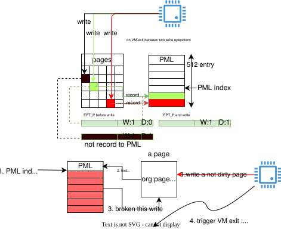
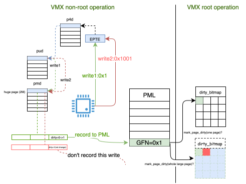

kernel PML
PML && WP
PML 和 WP 起到的作用是一样的，只不过PML可以达到一种batch WP的效果:

PML index始终指向 next PML entry, 每次record PML时，PML index 会dec, 并且check --PML_index的值, 是否在[0, 511]范围之内. 当PML index=0时， 如果此时再record PML, 则会触发--pml_index=0xffff, PML index 则不在 [0, 511], 此时会broken当前的write 操作，并VM-exit。
PML table大小为4096, 每一个entry 大小为8-byte, 保存着 dirty page的PFN.
其中，红色绿色， 两次write 操作在执行时，不会触发VM-exit，而是在write操作过程中，如果 需要dirty EPT entry, 则在PML中新增一个由 PML index指向的entry
另外，如果该指向该page 的 EPTE 已经mask dirty, 如黑色wrte，则本次写操作， 不会记录PML中。
我们再来横向比较下 WP 和 PML:
| 比较项 | WP | PML |
|---|---|---|
| How To Catch Write operation in VM | clear EPTE w bit | clear EPTE dirty bit |
| How To non-Cache Write in VM | set EPTE w bit | set EPTE dirty bit |
| When VM-exit | write WP page | PML buffer FULL |
| The maximum number of dirty pages that can be captured between a VM-entry and a VM-exit | 1 | 512 |
从上面对比图来看，PML 和WP很像
- WP关注
Wflag, 而PML关注Dflag, 两者是只关注EPTE中的一个flag - write clean page to dirty 在这两种用法中都可能会造成额外的VM-exit用来catch该 write operation。只不过
- WP: 只能catch one
- PML: **catch 512**
所以上面的相同不同之处，就导致PML可以比较完美的嵌入到当前的WP dirty log框架中，并且 由于其batch catch的特性，会提升系统性能(见mail list), 大致有4%～5%的性能提升)。
接下来主要来分析下patch:
patch 分析
首先一部分patch 是为了解决上面提到的WP和PMLtrack dirty page的方式差异(一个是关注D flag, 一个是关注W flag)。
Deference of Track Dirty Page(WP vs PML)
modify
kvm_arch_mmu_write_protect_pt_masked->kvm_arch_mmu_enable_log_dirty_pt_masked目前针对spte的clear dirty log 有两种方式,
clear W flag(WP)orclear D flag(PML), 所以命名也应该微调下（不能再以wp的命名方式命名, 应该更通用写）1 2 3 4 5 6 7 8 9
@@ -1059,7 +1059,7 @@ int kvm_get_dirty_log_protect(struct kvm *kvm, dirty_bitmap_buffer[i] = mask; offset = i * BITS_PER_LONG; - kvm_arch_mmu_write_protect_pt_masked(kvm, memslot, offset, + kvm_arch_mmu_enable_log_dirty_pt_masked(kvm, memslot, offset, mask); }
from patch1
avoid unnecessary PML record
avoid unnecessary PML record details
在没有引入PML之前，shadow pgtable中的dirty bit is too “chicken rib”(鸡肋), 或者说毫无用途。 但是引入了PML之后，dirty bit 就类似与W bit，用来”通知 VMX non-root operation”要不要去track 该page, 所以我们需要在不需要track this page 的流程中，mark EPTE’s D flag.
eg:
1 2 3 4 5 6 7 8 9 10 11 12 13
@@ -2597,8 +2597,14 @@ static int set_spte(struct kvm_vcpu *vcpu, u64 *sptep, } } - if (pte_access & ACC_WRITE_MASK) + if (pte_access & ACC_WRITE_MASK) { mark_page_dirty(vcpu->kvm, gfn); + /* + * Explicitly set dirty bit. It is used to eliminate unnecessary + * dirty GPA logging in case of PML is enabled on VMX. + */ + spte |= shadow_dirty_mask; + }
因为已经
mark_page_dirty(), 所以没有必要在track this dirty-ed page另外还有一个地方，就是在
fast pf fix路径，但是作者认为该路径在开启PML之后，一般不会走到:1 2 3 4 5 6 7 8 9 10 11 12 13 14 15 16 17 18 19 20 21 22 23
@@ -2914,6 +2920,16 @@ fast_pf_fix_direct_spte(struct kvm_vcpu *vcpu, struct kvm_mmu_page *sp, */ gfn = kvm_mmu_page_get_gfn(sp, sptep - sp->spt); + /* + * Theoretically we could also set dirty bit (and flush TLB) here in + * order to eliminate the unnecessary PML logging. See comments in + * set_spte. But as in case of PML, fast_page_fault is very unlikely to + * happen so we leave it unchanged. This might result in the same GPA + * to be logged in PML buffer again when the write really happens, and + * eventually to be called by mark_page_dirty twice. But it's also no + * harm. This also avoids the TLB flush needed after setting dirty bit + * so non-PML cases won't be impacted. 理论上，我们也可以在这里设置脏位（并刷新TLB），以消除不必要的PML日志记录。 请参阅set_spte中的注释。但是，由于在PML的情况下，fast_page_fault发生的可 能性非常小，因此我们将其保持不变。这可能会导致在实际写入时，同一GPA被再次 记录在PML缓冲区中，最后可能会被mark_page_dirty两次调用。但这也没有什么害处。 这样做还可以避免在设置脏位后需要的TLB刷新，从而不会影响非PML情况。 + */ if (cmpxchg64(sptep, spte, spte | PT_WRITABLE_MASK) == spte) mark_page_dirty(vcpu->kvm, gfn);
这里是作者懒么，显然不是，作者很勤奋的写了一大段comment来说明为什么不去做:
可能性很小，另外，如果在这里增加set dirty bit代码，并且流程真的走到了该分支， 那就需要 TLB flush, 这个代价太大了，并且会影响非PML的情景。
那第一个场景不是也类似于该场景，需要flush tlb么？但是
set_spte触发频率高很多set_spte很大概率会modify spte，大概率会走到flush tlb，所以，综合来看，增加的开销不大。
from patch3
更改原有
set_memory_region的一些逻辑, 大概流程为:set_memory_region change details
1 2 3 4 5 6 7 8 9 10 11 12 13 14 15 16 17 18 19 20 21 22 23 24 25 26 27 28 29 30 31 32 33 34 35 36 37 38 39 40 41 42 43 44 45 46 47 48 49 50 51 52 53 54
kvm_vm_ioctl => kvm_vm_ioctl_set_memory_region => kvm_set_memory_region => __kvm_set_memory_region => kvm_arch_commit_memory_region => if (change != KVM_MR_DELETE) kvm_mmu_slot_apply_flags(kvm, new) kvm_mmu_slot_apply_flags => if new flag & KVM_MEM_READONLY ## 仍然需要 WP => kvm_mmu_slot_remove_write_access return ## 开启DIRTY log => new->flags & KVM_MEM_LOG_DIRTY_PAGES => if (kvm_x86_ops->slot_enable_log_dirty) => kvm_x86_ops->slot_enable_log_dirty(kvm, new); ## vmx_slot_enable_log_dirty ## handle pages of normal page size => kvm_mmu_slot_leaf_clear_dirty # 只查找 page table level => foreach rmmap in memslot->arch.rmap[PT_PAGE_TABLE_LEVEL - 1] # clear dirty means，all page table level in slot will record to PML => flush |= __rmap_clear_dirty(kvm, rmapp) => if flush => kvm_flush_remote_tlbs ## handle pages of large page ## WHY? ===(1)=== => kvm_mmu_slot_largepage_remove_write_access ## level > PT_PAGE_TABLE_LEVEL => foreach every level i (> PT_PAGE_TABLE_LEVEL) => foreach rmmap in memslot->arch.rmap[i - PT_PAGE_TABLE_LEVEL] => flush |= __rmap_write_protect(kvm, rmapp, false) => if flush => kvm_flush_remote_tlbs(kvm) => else => kvm_mmu_slot_remove_write_access(kvm, new) ## foreach level, >= PT_PAGE_TABLE_LEVEL => foreach every level i => foeach rmapp in memslot->arch.rmap[i - PT_PAGE_TABLE_LEVEL] => flush |= __rmap_write_protect(kvm, rmapp, false) => if flush => kvm_flush_remote_tlbs(kvm) ## 关闭DIRTY log => else => if (kvm_x86_ops->slot_disable_log_dirty) => kvm_x86_ops->slot_disable_log_dirty(kvm, new) ## vmx_slot_disable_log_dirty ## ===(2)=== => kvm_mmu_slot_set_dirty => foreach every level i => foreach rmapp in memslot->arch.rmap[i - PT_PAGE_TABLE_LEVEL] => flush |= __rmap_set_dirty(kvm, rmapp); => if flush => kvm_flush_remote_tlbs(kvm)
我们需要关注两个问题(也是两个和WP不同的点)
当遇到huge page 时，不能简单的clear dirty bit.

如果
EPT-PMD如果映射了大页，对一个hugepage进行跨”PAGE_SIZE“访问，则会导致PML中只记录 一个write操作.并且和
WP不同的是，由于PML是类似于”auto batch WP”, 这两次write操作，无法分别进行catch， (但是WP可以), 所以如果我们想mark_page_dirty(one normal pagesize page), 就不能让这两次 write操作连续执行下去，所以，这里对大页进行了WP.当然，进行了WP之后，还有一些其他的操作，加速对大页中小页的catch。不放在本文讨论。 (之后在分析)
1 2 3 4 5 6
++++++++ ++++++++ ++++++++ 遗留问题 ++++++++ ++++++++
如果是PML, 需要在disable log dirty时，mark all spte dirty. 目的是，避免vcpu再次record PML。
flush PML to dirtymap
另外一个，主要的改动是, flush PML buffer to dirty_bitmap.主要分为.
主动flush
主动flush细节
是指vcpu运行时，在每次vm-exit时，主动flush pml buffer
1 2 3 4 5 6 7 8 9 10 11 12 13 14 15 16 17 18 19
@@ -7335,6 +7474,16 @@ static int vmx_handle_exit(struct kvm_vcpu *vcpu) u32 exit_reason = vmx->exit_reason; u32 vectoring_info = vmx->idt_vectoring_info; + /* + * Flush logged GPAs PML buffer, this will make dirty_bitmap more + * updated. Another good is, in kvm_vm_ioctl_get_dirty_log, before + * querying dirty_bitmap, we only need to kick all vcpus out of guest + * mode as if vcpus is in root mode, the PML buffer must has been + * flushed already. 这个代码段的目的是刷新保存了修改过的客体物理地址（GPAs）的PML（ Page Modification Log）缓冲区。这样做的好处是可以使得dirty_bitmap （脏位图）more upgated，因为PML缓冲区中的信息会被同步到dirty_bitmap中。 + */ + if (enable_pml) + vmx_flush_pml_buffer(vmx); +
这里相当于积极的flush PML， 这样做的好处是，能更大力度保证 dirty_bitmap的真实性。 并且简化了代码，无论是不是
EXIT_REASON_PML_FULLevent，都会在这里flush。那么我们在看下
EXIT_REASON_PML_FULLcallbak 还需不需要额外处理:1 2 3 4 5 6 7 8 9 10 11 12 13 14 15 16 17 18 19 20 21 22 23 24 25 26
static int handle_pml_full(struct kvm_vcpu *vcpu) { unsigned long exit_qualification; trace_kvm_pml_full(vcpu->vcpu_id); exit_qualification = vmcs_readl(EXIT_QUALIFICATION); //==(1)== /* * PML buffer FULL happened while executing iret from NMI, * "blocked by NMI" bit has to be set before next VM entry. */ if (!(to_vmx(vcpu)->idt_vectoring_info & VECTORING_INFO_VALID_MASK) && cpu_has_virtual_nmis() && (exit_qualification & INTR_INFO_UNBLOCK_NMI)) vmcs_set_bits(GUEST_INTERRUPTIBILITY_INFO, GUEST_INTR_STATE_NMI); //==(2)== /* * PML buffer already flushed at beginning of VMEXIT. Nothing to do * here.., and there's no userspace involvement needed for PML. */ return 1; }
- 不是简单return。但是是为了处理 block nmi state, 当正在执行 iret NMI时，因为 PML full event, 触发了vm-exit, 此时，VM 已经是
INTR_INFO_UNBLOCK_NMI状态。但是处理 PML full event 应该是透明的，guest 并不认为在iret->next instruction中间有fault, 认为当前cpu(vcpu) 仍然是block nmi 的状态，所以, 我们需要重新设置 VM 为 block nmi state.
NOTE
不知道IRET指令会不会set A/D flag
return 1表示PML full event已经处理完。无需退回到 userspace(qemu) 处理
- 不是简单return。但是是为了处理 block nmi state, 当正在执行 iret NMI时，因为 PML full event, 触发了vm-exit, 此时，VM 已经是
notify flush
是指vcpu正在non-root operation, 其他cpu想要获取该vm最新的dirty_bitmap, 所以需要该vcpu sync this vcpu PML to dirty bitmap.
1 2 3 4 5 6
kvm_vm_ioctl_get_dirty_log => if (kvm_x86_ops->flush_log_dirty) => kvm_x86_ops->flush_log_dirty(kvm); ## vmx_flush_log_dirty => kvm_flush_pml_buffers => kvm_for_each_vcpu(i, vcpu, kvm) => kvm_vcpu_kick(vcpu);
参考资料
- KVM: VMX: Page Modification Logging (PML) support
- Kai Huang(28 Jan 2015)
- 843e4330573cc5261ae260ce0b83dc570d8cdc05
- mail: KVM: VMX: Page Modification Logging (PML) support
- thp: kvm mmu transparent hugepage support
- Andrea Arcangeli aarcange@redhat.com (Jan 13 2011)
- 936a5fe6e6148c0b3ea0d792b903847d9b9931a1
- Intel Page Modification Logging, a hardware virtualization feature: study and improvement for virtual machine working set estimation
others
KVM: VMX: Page Modification Logging (PML) support patch0 commit(翻译):
1
2
3
4
5
6
7
8
9
10
11
12
13
14
15
16
17
18
19
20
21
22
23
24
25
26
27
28
29
30
31
32
33
34
35
36
37
38
39
40
41
42
43
44
45
46
47
48
49
50
51
52
53
54
55
56
57
58
59
60
61
62
63
64
65
66
67
68
69
70
71
72
73
74
75
76
77
78
79
80
81
82
83
84
85
86
87
88
89
90
91
92
93
94
This patch series adds Page Modification Logging (PML) support in VMX.
1) Introduction
PML is a new feature on Intel's Boardwell server platfrom targeted to reduce
overhead of dirty logging mechanism.
> PML是英特尔的Broadwell服务器平台上的一项新功能，旨在降低脏页日志记录机制的
> 开销。
The specification can be found at:
http://www.intel.com/content/www/us/en/processors/page-modification-logging-vmm-white-paper.html
Currently, dirty logging is done by write protection, which write protects guest
memory, and mark dirty GFN to dirty_bitmap in subsequent write fault. This works
fine, except with overhead of additional write fault for logging each dirty GFN.
The overhead can be large if the write operations from geust is intensive.
> 目前，脏页日志记录是通过写保护来实现的，即对guest内存进行写保护，并在随后的
> write fault中将脏GFN标记到脏位图中。这种方法基本上可以正常工作，但每次记录
> 一个脏GFN都需要额外的写入故障，带来了较大的开销。如果guest的写入操作非常频繁，
> 这种开销可能会非常大。
PML is a hardware-assisted efficient way for dirty logging. PML logs dirty GPA
automatically to a 4K PML memory buffer when CPU changes EPT table's D-bit from
0 to 1. To do this, A new 4K PML buffer base address, and a PML index were added
to VMCS. Initially PML index is set to 512 (8 bytes for each GPA), and CPU
decreases PML index after logging one GPA, and eventually a PML buffer full
VMEXIT happens when PML buffer is fully logged.
> PML是一种硬件辅助的高效脏页日志记录方法。当CPU将EPT表的D位从0更改为1时，
> PML会自动将脏GPA记录到一个4K的PML内存缓冲区中。为此，在VMCS中添加了一个
> 新的4K PML buffer base address 和一个PML index。最初，PML index 被设置为512
> （每个GPA占用8个字节），然后CPU在记录一个GPA后会减少PML index，最终当PML buffer 被
> 完全记录时，会触发一个PML缓冲区满VMEXIT事件。
With PML, we don't have to use write protection so the intensive write fault EPT
violation can be avoided, with an additional PML buffer full VMEXIT for 512
dirty GPAs. Theoretically, this can reduce hypervisor overhead when guest is in
dirty logging mode, and therefore more CPU cycles can be allocated to guest, so
it's expected benchmarks in guest will have better performance comparing to
non-PML.
> Theoretically : 理论上
>
> 使用PML后，我们不再需要使用写保护，因此可以避免频繁的write fault EPT violation 。
> 相反，只需要在PML缓冲区被完全记录时触发一次PML缓冲区满VMEXIT事件（对于512个脏GPA）。
> 理论上，这可以减少在脏页日志记录模式下运行的客户端的超级管理程序开销，从而可以将
> 更多的CPU周期分配给guest，因此预计在客户端的基准测试中将比非PML情况具有更好的性能。
2) Design
a. Enable/Disable PML
PML is per-vcpu (per-VMCS), while EPT table can be shared by vcpus, so we need
to enable/disable PML for all vcpus of guest. A dedicated 4K page will be
allocated for each vcpu when PML is enabled for that vcpu.
> "由于PML是每个vCPU（每个VMCS）的，而EPT表可以由多个vCPU共享，因此我们需要为客
> 户端的所有vCPU启用/禁用PML。启用PML后，会为每个vCPU分配一个专用的4K页面。"
Currently, we choose to always enable PML for guest, which means we enables PML
when creating VCPU, and never disable it during guest's life time. This avoids
the complicated logic to enable PML by demand when guest is running. And to
eliminate potential unnecessary GPA logging in non-dirty logging mode, we set
D-bit manually for the slots with dirty logging disabled.
> eliminate : 消除，排除
>
> 目前，我们选择在创建VCPU时始终启用PML，并且在客户端的整个生命周期中从不禁用它。
> 这避免了在客户端运行时按需启用PML的复杂逻辑。为了消除 non-dirty logging mode上可
> 能发生的不必要的GPA日志记录，我们手动设置了D位以禁用脏页日志记录的slot。
b. Flush PML buffer
When userspace querys dirty_bitmap, it's possible that there are GPAs logged in
vcpu's PML buffer, but as PML buffer is not full, so no VMEXIT happens. In this
case, we'd better to manually flush PML buffer for all vcpus and update the
dirty GPAs to dirty_bitmap.
> 当用户空间查询 dirty_bitmap 时，可能存在一些已经被记录在 vCPU 的 PML 缓冲区中的
> GPA，但由于 PML 缓冲区还没有满，所以不会发生 VMEXIT。在这种情况下，我们最好手动
> 地对所有 vCPU 的 PML 缓冲区进行刷新，并将脏 GPA 更新到 dirty_bitmap 中。这样可以
> 确保 dirty_bitmap 中包含了所有的脏 GPA，即使它们还没有引起 VMEXIT。
We do PML buffer flush at the beginning of each VMEXIT, this makes dirty_bitmap
more updated, and also makes logic of flushing PML buffer for all vcpus easier
-- we only need to kick all vcpus out of guest and PML buffer for each vcpu will
be flushed automatically.
> 我们在每次 VMEXIT 的开始都会对 PML 缓冲区进行刷新，这使得 dirty_bitmap 更加及
> 时地反映了脏 GPA 的状态，并且简化了对所有 vCPU 的 PML 缓冲区进行刷新的逻辑 --
> 我们只需要让所有的 vCPU 从客户端中退出，PML 缓冲区就会被自动地刷新。
commit message 后面的部分，主要展示了开启PML的性能损耗（大概在0.06%~0.45%之间). (0.06% 是在--nographic场景下)
以及和传统的 WP dirty log 相比，大概有(4% ~ 5%) 的提升。(作者的话是说，noticeable performance gain)